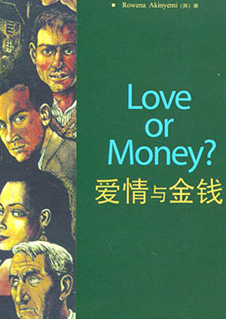
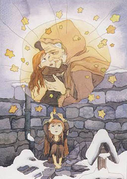
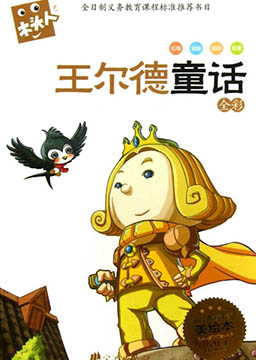

双语小说
收录中英文双语小说300多部，包括世界经典名著、社会小说、悬疑小说等短篇和长篇小说，可按照初中难度、高中难度和大学难度分类阅读，每部小说都有分段中英文对照，点击单词可查看中文翻译。

爱情与金钱（简化版） (Love or Money)
作者：罗伊纳·阿金耶米 (Rowena Akinyemi) [英国]
如果你是一名不错的侦探的话，那你得比沃尔什探长先找出凶手。沃尔什探长是名警探，他工作虽说慢了点，可十分细心。你是位“快手”吗？侦探就是寻找线索的人。而线索就是告诉你谁是凶手的重要但又细小的事物。发现线索不容易，但本故事中有许多线索。有些线索有用---它们能帮助你，可有些线索却不利---它们会妨碍你找到凶手。
秘密花园 (The Secret Garden)
作者：弗朗西丝·霍奇森·伯内特 (Frances Hodgson Burnett) [美国]
美国女作家弗朗西丝·霍奇森·伯内特创作的儿童文学作品。它是近百年来畅销不衰的经典儿童小说，多次被改编成影视作品，并在中国有多个图书版本。内容简介：庄园的主人克莱文先生在爱妻过世之后，变得阴郁古怪、消沉遁世，掩埋了花园的钥匙，十年不曾允许任何人出人花园，想借此阻断对亡妻的思念。他每次见到长着和妈妈一样漂亮面容的儿子柯林，都会引起更大的悲伤，于是他选择逃避，终年在外漂泊。霍乱中父母双亡的玛丽一夜之间变成孤儿，被从印度送往英国约克郡克莱文姑父的庄园生活，她从小性情乖戾，这个陌生的环境更使她倍感孤独落寞，她讨厌所有的人，当然也不知道自己被人不喜欢。她在知更鸟的指引下找到了尘封已久的秘密花园的钥匙。秘密花园里一片萧瑟。
爱玛 (Emma)
作者：简·奥斯汀 (Jane Austen) [英国]
英国作家简·奥斯汀创作的一部长篇小说。作品中主人公爱玛是个美丽、聪慧而富有的姑娘，同时也是一位不折不扣的幻想家。她热心关注身边的浪漫故事，却又固执地认为自己永远不会陷入其中。她自作主张为孤女哈丽埃特导演了一次又一次的恋爱。当哈丽埃特误以为自己爱上了地方官奈特利先生时，爱玛才惊觉原来自己也在爱着奈特利先生。这虽与她一开始就宣布的终身不嫁的誓言有悖，但坠入情网的她不得不放弃自己天真的誓言。该作品多次被搬上银幕。内容简介：爱玛是海伯里村首富伍德豪斯先生的小女儿，聪明美丽，从小受到家庭教师泰勒小姐的良好教育。父亲的宠爱和无忧无虑的生活环境，使她养成了自命不凡的性格。爱玛二十岁那年，泰勒小姐嫁给了附近一位绅士韦斯顿，离开了伍德豪斯家，爱玛在寂寞中认识了当地女子学校的学生哈丽特，与她交上了朋友。哈丽特是个私生女，姿容俏丽，性格温顺，非常可爱。爱玛想方设法把她和青年绅士埃尔顿撮合在一起，叫她拒绝了佃户罗伯特·马丁的求婚。其实埃尔顿的意中人不是哈丽特，而是爱玛本人。埃尔顿本人非常势利，根本就不会看上身世不明的哈丽特。爱玛没有撮合成功，又一次要为哈丽特安排一门亲事，这次她为哈丽特选中的是韦斯顿前妻生的儿子弗兰克。然而弗兰克半年前认识了海伯里村家道中落的贝茨小姐的外甥女简·费尔法克斯，并且互相倾心，私定了婚约。但是两个人并没有公布婚约。
了不起的盖茨比 (The Great Gatsby)
作者：弗朗西斯·斯科特·基·菲茨杰拉德 (Francis Scott Key Fitzgerald) [美国]
国作家弗朗西斯·斯科特·基·菲茨杰拉德创作的一部以以20世纪20年代的纽约市及长岛为背景的中篇小说，出版于1925年。20世纪末，美国学术界权威在百年英语文学长河中选出一百部最优秀的小说第二位，并被多次搬上银幕和舞台。内容简介：尼克从中西部故乡来到纽约，在他住所旁边正是本书主人公盖茨比的豪华宅第。这里每晚都在举行盛大的宴会。尼克和盖茨比相识，故事就这样开始了。 尼克对盖茨比充满探究的兴趣。探究的结果是：尼克了解到盖茨比内心深处有一段不了之情。年轻时的盖茨比并不富有，他是一个少校军官。他爱上了一位叫黛茜的姑娘，黛茜对他也情有所钟。后来第一次世界大战爆发，盖茨比被调往欧洲。似是偶然却也是必然，黛茜因此和他分手，转而与一个出身于富豪家庭的纨绔子弟汤姆结了婚。黛茜婚后的生活并不幸福，因为汤姆另有情妇。物欲的满足并不能填补黛茜精神上的空虚。盖茨比痛苦万分，他坚信是金钱让黛茜背叛了心灵的贞洁，于是立志要成为富翁。几年以后，盖茨比终于成功了。他在黛茜府邸的对面建造起了一幢大厦。盖茨比挥金如土，彻夜笙箫，一心想引起黛茜的注意，以挽回失去的爱情。
伊索寓言 (Aesop's Fables)
作者：伊索 (Aesop) [古希腊]
相传为公元前六世纪，被释放的古希腊奴隶伊索所著，搜集所有古希腊民间故事，并加入印度、阿拉伯及基督教故事。内容大多与动物有关。书中讲述的故事简短精练，刻画出来的形象鲜明生动，每则故事都蕴含哲理，或揭露和批判社会矛盾，或抒发对人生的领悟，或总结日常生活经验。该寓言集通过描写动物之间的关系来表现当时的社会关系，主要是压迫者和被压迫者之间的不平等关系。寓言作者谴责当时社会上人压迫人的现象，号召受欺凌的人团结起来与恶人进行斗争。对后代欧洲寓言的创作产生了重大的影响，不仅是西方寓言文学的典范之作，也是世界上传播最多的经典作品之一。
麦琪的礼物 (The Gift of the Magi)
作者：欧·亨利 (O Henry) [美国]
欧·亨利创作的短篇小说，讲述了一对穷困的年轻夫妇忍痛割爱互赠圣诞礼物的故事，反映了美国下层人民生活的艰难，赞美了主人公善良的心地和纯真爱情。内容简介：圣诞节的前一天,住在公寓里的贫穷的黛拉想给丈夫吉姆一个惊喜,可是她只有一元八角七,她知道这点钱根本不够买一件像样的的礼物,于是她把引以自豪的褐色瀑布似的秀发剪下来,卖了,换来了20美元。找遍了大大小小的商店,她花去21美元,终于买到一条朴素的白金表链,这可以配上吉姆的那块金表。而吉姆也想给老婆一个惊喜,他同样卖掉了祖传的一块金表，吉姆卖掉了他的金表为德拉买了一套“纯玳瑁做的，边上镶着珠宝”的梳子；黛拉卖掉了自己的长发为吉姆买了一条白金表链。他们都为对方舍弃了自己最宝贵的东西，而换来的礼物却因此变得毫无作用了。
汤姆·索亚历险记 (The Adventures of Tom Sawyer)
作者：马克·吐温 (Mark Twain) [美国]
美国小说家马克·吐温1876年发表的长篇小说。小说的时代在南北战争前，写的虽是圣彼得堡小镇，但该镇某种程度上可以说是当时美国社会的缩影。小说通过主人公的冒险经历，对美国虚伪庸俗的社会习俗、伪善的宗教仪式和刻板陈腐的学校教育进行了讽刺和批判，以欢快的笔调描写了少年儿童自由活泼的心灵。2020年4月，列入《教育部基础教育课程教材发展中心 中小学生阅读指导目录（2020年版）》。内容简介：19世纪上半世纪美国密西西比河畔的一个普通小镇。汤姆天真活泼、敢于探险、追求自由，不堪忍受束缚个性、枯燥乏味的生活，幻想干一番英雄事业。小说的时代在南北战争前，写的虽是圣彼得堡小镇，但该镇某种程度上可以说是当时美国社会的缩影。小说通过主人公的冒险经历，对美国虚伪庸俗的社会习俗、伪善的宗教仪式和刻板陈腐的学校教育进行了讽刺和批判，以欢快的笔调描写了少年儿童自由活泼的心灵。
安徒生童话 (Andersen's Fairy Tales)
作者：汉斯·克里斯汀·安徒生 (Hans Christian Andersen) [丹麦]
丹麦作家安徒生创作的童话集，2020年4月，列入《教育部基础教育课程教材发展中心 中小学生阅读指导目录（2020年版）》。在安徒生所处的时代，丹麦仍是一个君主专制主义社会，自中古以降，社会生活一直极少受到触动。进入十九世纪以后，则出现一系列重大历史变动，拿破仑战争造成的国力虚耗，在挪威问题上的失败，20年代的经济轰退，国王由保皇立场转向独裁，中产阶级谨小慎微、委曲求全，这些都使社会基本处于政治压迫和文化愚昧状态。在安徒生的作品中，我们也处处感到这个时代的灰色和压抑。安徒生将童话作为一种现代表达方式来进行创作，他借用童话的“儿童”视角透视现代人的复杂生活。安徒生让童话超越了民间文学范畴的传奇想象，成为一种鲜明的个体写作和现代技巧探索。该作爱憎分明，热情歌颂劳动人民、赞美他们的善良和纯洁的优秀品德；无情地揭露和批判王公贵族们的愚蠢、无能、贪婪和残暴。其中较为闻名的故事有：《小人鱼》、《丑小鸭》、《卖火柴的小女孩》、《拇指姑娘》等。
王尔德童话 (The tales of Oscar Wilde)
作者：奥斯卡·王尔德 (Oscar Wilde) [英国]
奥斯卡·王尔德（1854—1900）创作的。他是19世纪英国最伟大的艺术家之一，以其剧作、诗歌、童话和小说闻名于世。这部童话更成为世界文学宝库中的传世佳作。其语言纯正优美，堪称典范，意境高洁悠远益人心智，值得向每一位儿童和每一位家长推荐。童话包含了《快乐王子》、《夜莺与玫瑰》、《自私的巨人》、《忠实的朋友》、《神奇的火箭》、《少年国王》、《星孩》等童话故事，这些故事的语言华丽唯美，情节纯真生动，堪称完美世界的化身。细细地研读，你可以从中体会到人间的冷暖，领悟到人生的哲理。
史蒂夫·乔布斯传 (Steve Jobs:A Biography)
作者：沃尔特·艾萨克森 (Walter Isaacson) [美国]
作者是著名传记作家沃尔特·艾萨克森。该书作者沃尔特·艾萨克森花费两年的时间，与乔布斯四十多次面对面的访谈，并对乔布斯一百多位家庭成员、朋友、竞争对手和同事的采访，写成这本传记。内容简介：1955年2月24日，史蒂夫·乔布斯出生在美国旧金山，生活在美国硅谷附近。邻居都是惠普公司的职员。在这些人的影响下，乔布斯从小迷恋电子学。一个惠普的工程师看他如此痴迷，就推荐他参加惠普公司的“发现者俱乐部“，这是个专门为年轻工程师举办的聚会，每星期二晚上在公司的餐厅中举行。在一次聚会中，乔布斯第一次见到了电脑，他开始对计算机有了一个朦胧的认识。